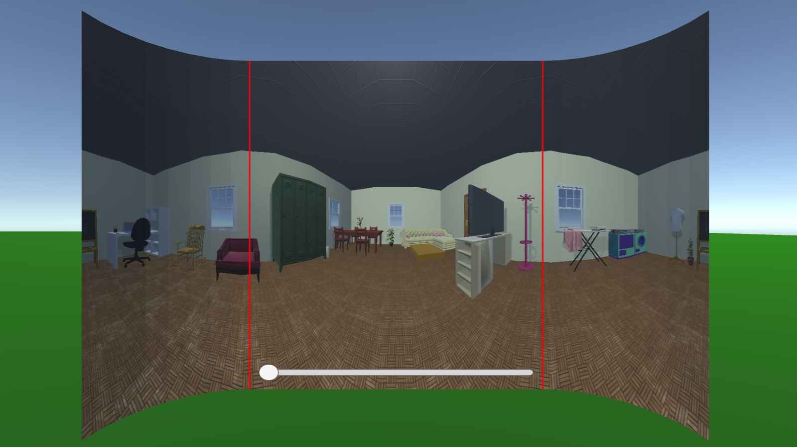

Point d'avancement Airbus - Inria
Damien Clergeaud
|
|
Outils de communication en RV
|

Pano
|
Outils de communication en RV
Pourquoi?
- Limiter la communications oral
- Garder la communication téléphonique pour des discussions plus haut niveaux
- Faciliter l'immersion
Comment?
En augmentant:
- La perception de l'EV (awareness)
- La communication via l'EV
À propos de perception
- Perception des composants et de l'environnement
- Perception des autres utilisateurs dans l'EV
- Perception de l'activité en cours
Outil de désignation
- Volume englobant
- Le spot lumineux
- Outlined Shader
- Texture clignotante
| Outils |
Les composants physiques |
Les autres utilisateurs |
L'activité globale |
| Métaphore de désignation |
X |
X |
X |
| Minimap |
X |
X |
|
| Visualisation à distance |
X |
X |
X |
| Trajectoire de composants |
X |
|
X |
Outils de communication en RV